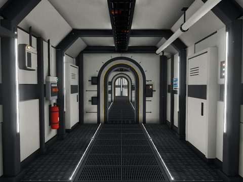
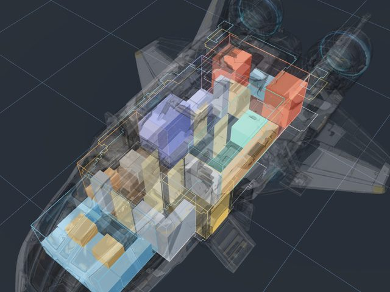
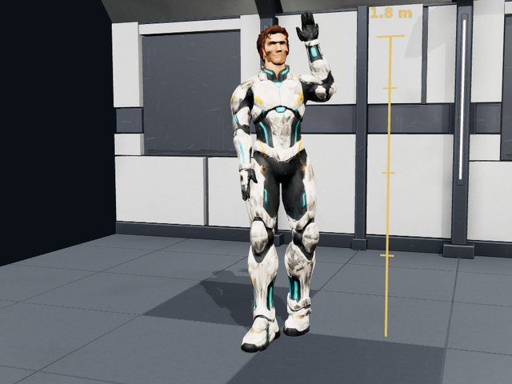

Space Station Labs
Prototypes for the space game, tried out on their own before they go in.

Kit Lab
The station's building pieces, built in code: floor and ceiling tiles, wall panels, ribs, the arched hatch, window walls, big-room pieces, furniture, a hangar door and a stand-in shuttle. Look round each one, then walk the test rooms and the whole station built from them: your quarters, the terminal with the captains and the galley, and the hangar. The doors open as you come near. The Sky tab shows what's out of the windows: a ringed planet with auroras and lightning, its moon, a comet and three nebulae. The Ship parts tab has the parts the ships are built from: hull pieces on a fine grid, engines, wings, swivelling thrusters, cockpit seats and controls, and the station's own walls and fittings at a ship's size. A sample hull, a sample cabin and the ships built from the parts (Miner A, Medic A, Explorer C, Hauler A) are on the Rooms tab.

Ship Lab
The ships' outsides at true size, each made by Meshy from the game's maker's picture of it, and the space inside them, measured. Blueprints of the rooms are drawn on that space, on the deck plan, the side section and in 3D inside the see-through hull, and checked as you edit them: nothing through the hull, head room, corridors, doors, a walk to every room. Explorer C has three to choose from. Drag the walls, furniture and doors, add and remove things, and download or upload a blueprint.

Crew Lab
The crew, rigged to the Mathwood people's skeletons so every one of their clips plays: standing, walking, running, waving, sitting, clapping, polishing a glass, hammering, driving. Each person is put together from parts that go with each other: a suit, a head and hair, the Mathwood people's hairstyles among them. A crewman in the station suit and the captain in her jumpsuit to start. Change the job colours on the suit (explorer, miner, medic, hauler, station staff), the skin tone and the hair colour. Look at the face and the hair up close, or at the bare shape and its wireframe.